<div div = "second_b">
	<div class = "b_top">
		<a href="#/mealSecond"></a>			
						
		<div class="touming"></div>
		<button>关注</button>
		
		<span>破茧 化蝶</span>
		<p>这家伙很懒，什么介绍都没写</p> 
	</div>
	<div class="b_content">
		<ul>
			<li><a href="">作品(0)</a></li>
			<li><a href="">关注(0)</a></li>
			<li><a href="">粉丝(0)</a></li>					
		</ul>
	</div>
	<div class="b_end">
		
		<p>这家伙很懒什么也没留下</p>
	</div>
</div>